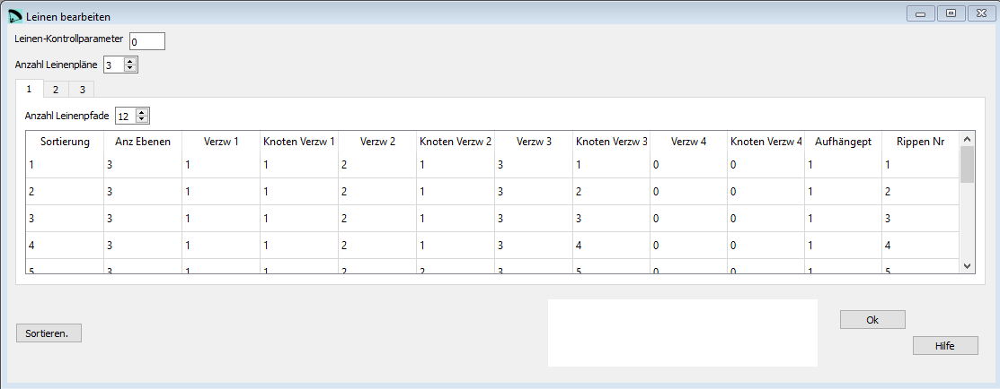

Leinen¶
Im Fenster Leinen definieren wir den detaillierten Leinenplan unseres Flügels (ohne Bremsleinen):
{kind=link}
Rohdaten:
***************************************************
* 9. SUSPENSION LINES DESCRIPTION
***************************************************
0
3
12
3 1 1 2 1 3 1 0 0 1 1
3 1 1 2 1 3 2 0 0 1 2
3 1 1 2 1 3 3 0 0 1 3
3 1 1 2 1 3 4 0 0 1 4
3 1 1 2 2 3 5 0 0 1 5
3 1 1 2 2 3 6 0 0 1 6
3 1 1 2 2 3 7 0 0 1 7
3 1 1 2 2 3 8 0 0 1 8
3 1 1 2 3 3 9 0 0 1 9
3 1 1 2 3 3 10 0 0 1 10
3 1 1 2 3 3 11 0 0 1 11
3 1 1 2 3 3 12 0 0 1 12
16
3 1 1 2 1 3 1 0 0 2 1
3 1 1 2 1 3 2 0 0 2 2
.......
Leinen-Kontrollparameter¶
Der erste Parameter Leinen-Kontrollparameter definiert wie die Leinenlänge berechnet wird.
Erlaubte Werte sind 0..4:
0 = strikte geometrisch Berechnung der unteren Leinen
1 = Gewichtungstyp 1 der unteren Leinen
2 = Gewichtungstyp 2 der unteren Leinen
3 = Gewichtungstyp 1 der unteren Leinen (Optimiert nach Spannweite und Profiltiefe). Eine genaue Beschreibung (in Englisch) findest Du hier OPTIMIZE YOUR LINES IN LEPARAGLIDING.
Parameter 3 ist die aktuell empfohlene Berechnungsart für neue Entwürfe. Die Lastverteilung sollte gegenüber den anderen Varianten besser werden und der Schirm dadurch stabiler.
Leinenplan¶
Stelle Dir vor Du schaust von hinten oder vorne auf die Leinen deines Flügels.

Ein Pfad kann maximal über 4 Ebenen definiert werden. Für jede Ebene definierst Du die Nummer des Knotens in welchem die Leine endet.
Um das ein wenig detaillierter zu erklären schauen wir auf die erste Zeile in der Zeichnung oben:
4 1 1 2 1 3 1 4 1 (A=1) 1
Das erste Paar 1 1 beschreibt das ende des Pfades auf Ebene 1 (die unterste) Knoten 1
2 1 der Pfad geht über Ebene 2 und endet in Knoten 1
3 1 der Pfad geht über Ebene 3 und endet in Knoten 1
4 1 der Pfad geht über Ebene 4 und endet in Knoten 1
(A=1) 1 jetzt müssen wir nur noch das Ende des Pfades mit dem Aufhängepunkt 1 (derjenige am nächsten zur Eintrittskante) von Rippe 1 verbinden
Die zweite Zeile
4 1 1 2 1 3 1 4 2 (A=1) 2
Das erste Paar 1 1 beschreibt das ende des Pfades auf Ebene 1 (die unterste) Knoten 1
2 1 der Pfad geht über Ebene 2 und endet in Knoten 1
3 1 der Pfad geht über Ebene 3 und endet in Knoten 1
Bis hier sind beide Pfade identisch.
4 2 der Pfad geht über Ebene 4 und endet in Knoten 2 Hier teilt sich der Pfad auf, während der Berechnung wird das automatisch als 2. Leine übersetzt
(A=1) 2 dieser Pfad wird jetzt mit dem Aufhängepunkt 1 von Rippe 2 verbunden
Prinzipielle Regeln¶
Für jeden Gurt musst Du einen eigenen Leinenplan definieren
Wenn Du eine Ebene nicht verwenden willst musst Du für das Definitionspaar dieser Ebene 0 einsetzen.
Die Zeile unten zeigt einen Pfad der nur über 3 Ebenen geht.
3 1 1 2 3 3 17 0 0 3 9
Leinen-Kontrollparameter¶
Bisher ist nur eine Art die Leinen zu definieren vollständig implementiert. Der Wert muss immer auf 0 gesetzt werden.
Anzahl Leinenpläne¶
Für jeden Gurt musst Du einen eigenen Leinenplan definieren
Anzahl Ebenen¶
Hier definierst Du wie viele Ebenen ein Pfad beinhaltet.
Verzw 1, 2, 3, 4¶
Definiert die Ebenennummer für eine bestimmte Verzweigung.
Knoten Verzw 1, 2, 3, 4¶
Die Knotennummer eines Pfades auf einer bestimmten Ebene.
Sortieren¶
Mit der Schaltfläche Sortieren können die Zeilen neu angeordnet werden. Wenn das gemacht werden soll kannst Du die neuen Nummern in der ersten Spalte einsetzten und anschliessend mit der Schaltfläche die Tabelle neu sortieren.
Eine detaillierte Beschreibung in englisch findest Du auf der Laboratori d'envol website.